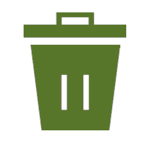

O que é a Coleta Seletiva Solidária UFSM
Consiste na coleta dos resíduos recicláveis gerados na UFSM por associações de selecionadores de resíduos habilitadas, de acordo com o Decreto 5940/2006.
Tipos de Resíduos
-
Resíduos RecicláveisOs resíduos recicláveis (contêineres verdes) são papéis, metais, vidros e plásticos. Esses resíduos são recolhidos e destinados às Associações Habilitadas, os quais são triados e a classificados de acordo com a existência de mercado comprador.
-
 Resíduos OrgânicosOs resíduos orgânicos (contêineres marrons) são enviados à unidade de compostagem do Colégio Politécnico da UFSM.
Resíduos OrgânicosOs resíduos orgânicos (contêineres marrons) são enviados à unidade de compostagem do Colégio Politécnico da UFSM. -
 RejeitosOs rejeitos (contêineres pretos ou cinzas) são recolhidos pela Coleta Pública realizada pela Prefeitura Municipal e são destinados ao aterro da cidade.
RejeitosOs rejeitos (contêineres pretos ou cinzas) são recolhidos pela Coleta Pública realizada pela Prefeitura Municipal e são destinados ao aterro da cidade.